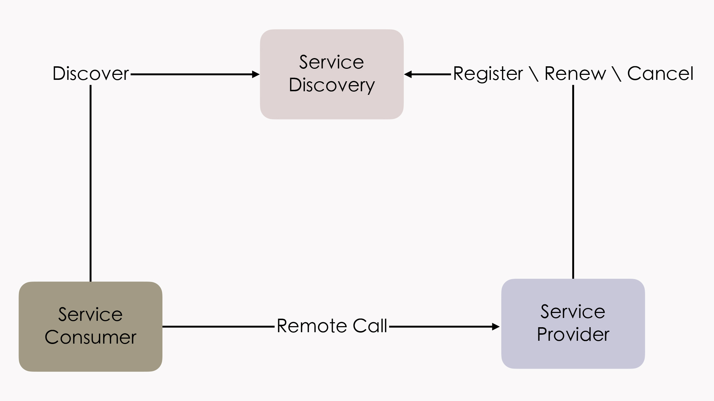
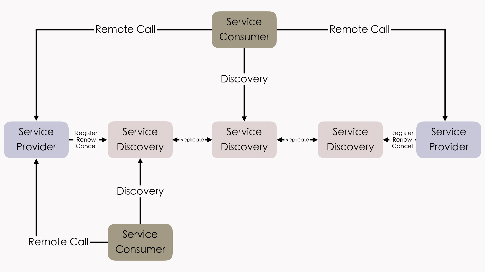

- 00 _导读 _ 什么是“The Fenix Project”？.md.html
- 00 开篇词 _ 如何构建一个可靠的分布式系统？.md.html
- 01 _ 原始分布式时代：Unix设计哲学下的服务探索.md.html
- 02 _ 单体系统时代：应用最广泛的架构风格.md.html
- 03 _ SOA时代：成功理论与失败实践.md.html
- 04 _ 微服务时代：SOA的革命者.md.html
- 05 _ 后微服务时代：跨越软件与硬件之间的界限.md.html
- 06 _ 无服务时代：“不分布式”云端系统的起点.md.html
- 07 _ 远程服务调用（上）：从本地方法到远程方法的桥梁.md.html
- 08 _ 远程服务调用（下）：如何选择适合自己的RPC框架？.md.html
- 09 _ RESTful服务（上）：从面向过程编程到面向资源编程.md.html
- 10 _ RESTful服务（下）：如何评价服务是否RESTful？.md.html
- 11 _ 本地事务如何实现原子性和持久性？.md.html
- 12 _ 本地事务如何实现隔离性？.md.html
- 13 _ 全局事务和共享事务是如何实现的？.md.html
- 14 _ 分布式事务之可靠消息队列.md.html
- 15 _ 分布式事务之TCC与SAGA.md.html
- 16 _ 域名解析系统，优化HTTP性能的第一步.md.html
- 17 _ 客户端缓存是如何帮助服务器分担流量的？.md.html
- 18 _ 传输链路，优化HTTP传输速度的小技巧.md.html
- 19 _ 如何利用内容分发网络来提高网络性能？.md.html
- 20 _ 常见的四层负载均衡的工作模式是怎样的？.md.html
- 21 _ 服务端缓存的三种属性.md.html
- 22 _ 分布式缓存如何与本地缓存配合，提高系统性能？.md.html
- 23 _ 认证：系统如何正确分辨操作用户的真实身份？.md.html
- 24 _ 授权（上）：系统如何确保授权的过程可靠？.md.html
- 25 _ 授权（下）：系统如何确保授权的结果可控？.md.html
- 26 _ 凭证：系统如何保证与用户之间的承诺是准确完整且不可抵赖的？.md.html
- 27 _ 保密：系统如何保证敏感数据无法被内外部人员窃取滥用？.md.html
- 28 _ 传输（上）：传输安全的基础，摘要、加密与签名.md.html
- 29 _ 传输（下）：数字证书与传输安全层.md.html
- 30 _ 验证：系统如何确保提交给服务的数据是安全的？.md.html
- 31 _ 分布式共识（上）：想用好分布式框架，先学会Paxos算法吧.md.html
- 32 _ 分布式共识（下）：Multi Paxos、Raft与Gossip，分布式领域的基石.md.html
- 33 _ 服务发现如何做到持续维护服务地址在动态运维中的时效性？.md.html
- 34 _ 路由凭什么作为微服务网关的基础职能？.md.html
- 35 _ 如何在客户端实现服务的负载均衡？.md.html
- 36 _ 面对程序故障，我们该做些什么？.md.html
- 37 _ 要实现某种容错策略，我们该怎么做？.md.html
- 38 _ 限流的目标与模式.md.html
- 39 _ 如何构建零信任网络安全？.md.html
- 40 _ 如何实现零信任网络下安全的服务访问？.md.html
- 41 _ 分布式架构中的可观测到底说的是什么？.md.html
- 42 _ 分析日志真的没那么简单.md.html
- 43 _ 一个完整的分布式追踪系统是什么样子的？.md.html
- 44 _ 聚合度量能给我们解决什么问题？.md.html
- 45 _ 模块导学：从微服务到云原生.md.html
- 46 _ 容器的崛起（上）：文件、访问、资源的隔离.md.html
- 47 _ 容器的崛起（下）：系统、应用、集群的封装.md.html
- 48 _ 以容器构建系统（上）：隔离与协作.md.html
- 49 _ 以容器构建系统（下）：韧性与弹性.md.html
- 50 _ 应用为中心的封装（上）：Kustomize与Helm.md.html
- 51 _ 应用为中心的封装（下）：Operator与OAM.md.html
- 52 _ Linux网络虚拟化（上）：信息是如何通过网络传输被另一个程序接收到的？.md.html
- 53 _ Linux网络虚拟化（下）：Docker所提供的容器通讯方案有哪些？.md.html
- 54 _ 容器网络与生态：与CNM竞争过后的CNI下的网络插件生态.md.html
- 55 _ 谈谈Kubernetes的存储设计理念.md.html
- 56 _ Kubernetes存储扩展架构：一个真实的存储系统如何接入或移除新存储设备？.md.html
- 57 _ Kubernetes存储生态系统：几种有代表性的CSI存储插件的实现.md.html
- 58 _ Kubernetes的资源模型与调度器设计.md.html
- 59 _ 透明通讯的涅槃（上）：通讯的成本.md.html
- 60 _ 透明通讯的涅槃（下）：控制平面与数据平面.md.html
- 61 _ 服务网格与生态：聊聊服务网格的两项标准规范.md.html
- 62 _ Fenix's Bookstore的前端工程.md.html
- 63 _ 基于Spring Boot的单体架构.md.html
- 64 _ 基于Spring Cloud的微服务架构.md.html
- 65 _ 基于Kubernetes的微服务架构.md.html
- 66 _ 基于Istio的服务网格架构.md.html
- 67 _ 基于云计算的无服务架构.md.html
- 春节特别放送（上）_ 有的放矢，事半功倍.md.html
- 春节特别放送（下）_ 积累沉淀，知行合一.md.html
- 用户故事 _ 詹应达：持续成长，不惧未来.md.html
- 结束语 _ 程序员之路.md.html
- 结课测试 _ 一套习题，测出你的掌握程度.md.html
- 捐赠
33 _ 服务发现如何做到持续维护服务地址在动态运维中的时效性？
你好，我是周志明。
前面的两节课，我们已经学习了与分布式相关的算法和理论，掌握了一致性、共识、Paxos等共识算法，为了解分布式环境中的操作共享数据打好了理论基础。那么从这一讲开始，我们就来一起了解下，在使用分布式服务构造大型系统的过程中，都可能会遇到哪些问题，以及针对这些问题，都可以选择哪些解决方案。
好，那在正式开始学习之前呢，让我们先来思考一个问题：为什么在微服务应用中，需要引入服务发现呢？它的意义是什么？
服务发现解耦对位置的依赖
事实上，服务发现的意义是解耦程序对服务具体位置的依赖，对于分布式应用来说，服务发现不是可选项，而是必须的。
要理解分布式中的服务发现，那不妨先以单机程序中的类库来类比，因为类库概念的普及，让计算机实现了通过位于不同模块的方法调用，来组装复用指令序列的目的，打开了软件达到更大规模的一扇大门。无论是编译期链接的C/CPP，还是运行期链接的Java，都要通过链接器（Linker），把代码里的符号引用转换为模块入口或进程内存地址的直接引用。
而服务概念的普及，让计算机可以通过分布于网络中的不同机器互相协作来复用功能，这是软件发展规模的第二次飞跃。此时，如何确定目标方法的确切位置，便是与编译链接有着等同意义的问题，解决该问题的过程，就被叫做“服务发现”（Service Discovery）。
通过服务来实现组件- Microservice architectures will use libraries, but their primary way of componentizing their own software is by breaking down into services.- 微服务架构也会使用到类库，但构成软件系统组件的主要方式是将其拆分为一个个服务。- —— Martin Fowler / James Lewis, Microservices, 2014
所有的远程服务调用都是使用“全限定名（Fully Qualified Domain Name，FQDN）、端口号、服务标识”构成的三元组，来确定一个远程服务的精确坐标的。全限定名代表了网络中某台主机的精确位置，端口代表了主机上某一个提供服务的程序，服务标识则代表了该程序所提供的一个方法接口。
其中，“全限定名、端口号”的含义在各种远程服务中都一致，而“服务标识”则与具体的应用层协议相关，它可以是多样的，比如HTTP的远程服务，标识是URL地址；RMI的远程服务，标识是Stub类中的方法；SOAP的远程服务，标识是WSDL中的定义，等等。
也正是因为远程服务的多样性，导致了“服务发现”也会有两种不同的理解。
一种是以UDDI为代表的“百科全书式”的服务发现。上到提供服务的企业信息（企业实体、联系地址、分类目录等），下到服务的程序接口细节（方法名称、参数、返回值、技术规范等），它们都在服务发现的管辖范围之内。
另一种是类似于DNS这样的“门牌号码式”的服务发现。这种服务发现只满足从某个代表服务提供者的全限定名，到服务实际主机IP地址的翻译转换。它并不关心服务具体是哪个厂家提供的，也不关心服务有几个方法，各自都由什么参数所构成，它默认这些细节信息服务消费者本身就是了解的。此时，服务坐标就可以退化为简单的“全限定名+端口号”。
现如今，主要是后一种服务发现占主流地位，所以咱们这节课要探讨的服务发现，如无说明，都是指的后者。
在前面讲“透明多级分流系统”这个小章节的时候，我提到过，原本程序只依赖DNS把一个全限定名翻译为一个或者多个IP地址（或者SRV等其他记录），就可以实现服务发现了，后来的负载均衡器实质上也承担了一部分服务发现的职责（指外部IP地址到各个服务内部实际IP的转换）。我们也已经详细解析过，这种方式在软件追求不间断长时间运行的时代是很合适的。
但随着微服务的逐渐流行，服务的非正常宕机重启和正常的上下线操作变得更加频繁，仅靠着DNS服务器和负载均衡器等基础设施，就显得逐渐有些疲于应对，无法跟上服务变动的步伐了。
因此，人们开始尝试使用ZooKeeper这样的分布式K/V框架，通过软件自身来完成服务注册与发现。ZooKeeper曾短暂统治过远程服务发现，是微服务早期对服务发现的主流选择，但毕竟ZooKeeper是很底层的分布式工具，用户自己还需要做相当多的工作，才能满足服务发现的需求。
那到了2014年，在Netflix内部经受过长时间实际考验的、专门用于服务发现的Eureka，宣布了开源，并很快被纳入Spring Cloud，成为Spring默认的远程服务发现的解决方案。从此，Java程序员就无需再在服务注册这件事情上花费太多的力气。
然后到2018年，Spring Cloud Eureka进入维护模式以后，HashiCorp的Consul和阿里巴巴的Nacos就很快从Eureka手上接过传承的衣钵。此时的服务发现框架已经发展得相当成熟，考虑到了几乎方方面面的问题，比如可以支持通过DNS或者HTTP请求，进行符号与实际地址的转换，支持各种各样的服务健康检查方式，支持集中配置、K/V存储、跨数据中心的数据交换等多种功能，可以说是以应用自身去解决服务发现的一个顶峰。
而如今，云原生时代来临，基础设施的灵活性得到了大幅度地增强，最初使用基础设施来透明化地做服务发现的方式，又重新被人们所重视了，如何在基础设施和网络协议层面，对应用尽可能无感知、尽可能方便地实现服务发现，便是目前一个主要的发展方向。
接下来，我们就具体来看看服务发现的三个关键的子问题，并一起探讨、对比下最常见的用作服务发现的几种形式，以此让你了解服务发现中，可用性与可靠性之间的关系和权衡。
服务发现要解决注册、维护和发现三大功能问题
那么，第一个问题就是，“服务发现”具体是指进行过什么操作呢？我认为，这里面其实包含了三个必须的过程：
- 服务的注册（Service Registration）
当服务启动的时候，它应该通过某些形式（比如调用API、产生事件消息、在ZooKeeper/Etcd的指定位置记录、存入数据库，等等）把自己的坐标信息通知给服务注册中心，这个过程可能由应用程序来完成（比如Spring Cloud的@EnableDiscoveryClient注解），也可能是由容器框架（比如Kubernetes）来完成。
- 服务的维护（Service Maintaining）
尽管服务发现框架通常都有提供下线机制，但并没有什么办法保证每次服务都能优雅地下线（Graceful Shutdown），而不是由于宕机、断网等原因突然失联。所以，服务发现框架就必须要自己去保证所维护的服务列表的正确性，以避免告知消费者服务的坐标后，得到的服务却不能使用的尴尬情况。
现在的服务发现框架，一般都可以支持多种协议（HTTP、TCP等）、多种方式（长连接、心跳、探针、进程状态等）来监控服务是否健康存活，然后把不健康的服务自动下线。
- 服务的发现（Service Discovery）
这里所说的发现是狭义的，它特指消费者从服务发现框架中，把一个符号（比如Eureka中的ServiceID、Nacos中的服务名、或者通用的FDQN）转换为服务实际坐标的过程，这个过程现在一般是通过HTTP API请求，或者是通过DNS Lookup操作来完成的（还有一些相对少用的方式，如Kubernetes也支持注入环境变量）。
当然，我提到的这三点只是列举了服务发现中必须要进行的过程，除此之外它还是会有一些可选的功能的，比如在服务发现时，进行的负载均衡、流量管控、K/V存储、元数据管理、业务分组，等等，这些功能都属于具体服务发现框架的功能细节，这里就不再展开了。
下面我们来讨论另一个很常见的问题。
不知道你有没有观察过，很多谈论服务发现的文章，总是无可避免地会先扯到“CP”还是“AP”的问题上。那么，为什么服务发现对CAP如此关注、如此敏感呢？
其实，我们可以从服务发现在整个系统中所处的角色，来着手分析这个问题。
在概念模型中，服务中心所处的地位是这样的：提供者在服务发现中注册、续约和下线自己的真实坐标，消费者根据某种符号从服务发现中获取到真实坐标，它们都可以看作是系统中平等的微服务。我们来看看这个概念模型示意图：

不过，在真实的系统中，服务发现的地位还是有一些特殊，我们还不能把它完全看作是一个普通的服务。为啥呢？
这是因为，服务发现是整个系统中，其他所有服务都直接依赖的最基础的服务（类似相同待遇的大概就数配置中心了，现在服务发现框架也开始同时提供配置中心的功能，以避免配置中心又去专门搞出一集群的节点来），几乎没有办法在业务层面进行容错处理。而服务注册中心一旦崩溃，整个系统都会受到波及和影响，因此我们必须尽最大可能，在技术层面上保证系统的可用性。
所以，在分布式系统中，服务注册中心一般会以内部小集群的方式进行部署，提供三个或者五个节点（通常最多七个，一般也不会更多了，否则日志复制的开销太高）来保证高可用性。你可以看看下面给出的这个例子：

另外，这里你还要注意一点，就是这个图例中各服务发现节点之间的“Replicate”字样。
作为用户，我们当然希望服务注册一直可用、永远健康的同时，也能够在访问每一个节点中都取到一致的数据，而这两个需求就构成了CAP矛盾。
我拿前面提到的最有代表性的Eureka和Consul来举个例子。
这里，我以AP、CP两种取舍作为选择维度，Consul采用的是Raft协议，要求多数派节点写入成功后，服务的注册或变动才算完成，这就严格地保证了在集群外部读取到的服务发现结果一定是一致的；Eureka的各个节点间采用异步复制来交换服务注册信息，服务注册或变动时，并不需要等待信息在其他节点复制完成，而是马上在该服务发现节点就宣告可见（但其他节点是否可见并不保证）。
实际上，这两点差异带来的影响并不在于服务注册的快慢（当然，快慢确实是有差别），而在于你如何看待以下这件事情：
假设系统形成了A、B两个网络分区后，A区的服务只能从区域内的服务发现节点获取到A区的服务坐标，B区的服务只能取到在B区的服务坐标，这对你的系统会有什么影响？
- 如果这件事情对你并没有什么影响，甚至有可能还是有益的，那你就应该倾向于选择AP的服务发现。比如假设A、B就是不同的机房，是机房间的网络交换机导致服务发现集群出现的分区问题，但每个分区中的服务仍然能独立提供完整且正确的服务能力，此时尽管不是有意而为，但网络分区在事实上避免了跨机房的服务请求，反而还带来了服务调用链路优化的效果。
- 如果这件事情可能对你影响非常大，甚至可能带来比整个系统宕机更坏的结果，那你就应该倾向于选择CP的服务发现。比如系统中大量依赖了集中式缓存、消息总线、或者其他有状态的服务，一旦这些服务全部或者部分被分隔到某一个分区中，会对整个系统的操作正确性产生直接影响的话，那与其搞出一堆数据错误，还不如停机来得痛快。
除此之外，在服务发现的过程中，对系统的可用性和可靠性的取舍不同，对服务发现框架的具体实现也有着决定性的影响。接下来，我们就具体来了解下几类不同的服务发现的实现形式。
服务发现需要有效权衡一致性与可用性的矛盾
数据一致性与服务可用性之间的矛盾是分布式系统永恒的话题。而在服务发现这个场景里，权衡的主要关注点是一旦出现分区所带来的后果，其他在系统正常运行过程中，出现的速度问题都是次要的。
所以最后，我们再来讨论一个很“务实”的话题：现在那么多的服务发现框架，哪一款最好呢？或者说我们应该如何挑选最适合的呢？
实际上，现在直接以服务发现、服务注册中心为目标，或者间接用来实现这个目标的方式主要有以下三类：
- 第一类：在分布式K/V存储框架上自己实现的服务发现
这类的代表是ZooKeeper、Doozerd、Etcd。这些K/V框架提供了分布式环境下读写操作的共识保证，Etcd采用的是我们学习过的Raft算法，ZooKeeper采用的是ZAB算法（一种Multi Paxos的派生算法），所以采用这种方案，就不必纠结CP还是AP的问题了，它们都是CP的。
这类框架的宣传语中往往会主动提及“高可用性”，它们的潜台词其实是“在保证一致性和分区容错性的前提下，尽最大努力实现最高的可用性”，比如Etcd的宣传语就是“高可用的集中配置和服务发现”（Highly-Available Key Value Store for Shared Configuration and Service Discovery）。
这些K/V框架的另一个共同特点是在整体较高复杂度的架构和算法的外部，维持着极为简单的应用接口，只有基本的CRUD和Watch等少量API，所以我们如果要在上面完成功能齐全的服务发现，有很多基础的能力，比如服务如何注册、如何做健康检查等等，都必须自己实现，因此现在一般也只有“大厂”才会直接基于这些框架去做服务发现了。
- 第二类：以基础设施（主要是指DNS服务器）来实现服务发现
这类的代表是SkyDNS、CoreDNS。在Kubernetes 1.3之前的版本，是使用SkyDNS作为默认的DNS服务，它的工作原理是从API Server中监听集群服务的变化，然后根据服务生成NS、SRV等DNS记录存放到Etcd中，kubelet会在每个Pod内部设置DNS服务的地址，作为SkyDNS的地址，在需要调用服务时，只需查询DNS，把域名转换成IP列表便可实现分布式的服务发现。
而在Kubernetes 1.3之后，SkyDNS不再是默认的DNS服务器，也不再使用Etcd存储记录，而是只将DNS记录存储在内存中的KubeDNS代替；到了1.11版，就更推荐采用扩展性很强的CoreDNS，此时我们可以通过各种插件来决定是否要采用Etcd存储、重定向、定制DNS记录、记录日志，等等。
那么采用这种方案的话，是CP还是AP就取决于后端采用何种存储，如果是基于Etcd实现的，那自然是CP的；如果是基于内存异步复制的方案实现的，那就是AP的。
也就是说，以基础设施来做服务发现，好处是对应用透明，任何语言、框架、工具都肯定是支持HTTP、DNS的，所以完全不受程序技术选型的约束。但它的坏处是透明的并不一定简单，你必须自己考虑如何去做客户端负载均衡、如何调用远程方法等这些问题，而且必须遵循或者说受限于这些基础设施本身所采用的实现机制。
比如在服务健康检查里，服务的缓存期限就必须采用TTL（Time to Live）来决定，这是DNS协议所规定的，如果想改用KeepAlive长连接来实时判断服务是否存活就很麻烦。
- 第三类：专门用于服务发现的框架和工具
这类的代表是Eureka、Consul和Nacos。- 这一类框架中，你可以自己决定是CP还是AP的问题，比如CP的Consul、AP的Eureka，还有同时支持CP和AP的Nacos（Nacos采用类Raft协议做的CP，采用自研的Distro协议做的AP，注意这里的“同时”是“都支持”的意思，它们必须二取其一，不是说CAP全能满足）。
另外，还有很重要一点是，它们对应用并不是透明的。尽管Consul、Nacos也支持基于DNS的服务发现，尽管这些框架都基本上做到了以声明代替编码（比如在Spring Cloud中只改动pom.xml、配置文件和注解即可实现），但它们依然是应用程序有感知的。所以或多或少还需要考虑你所用的程序语言、技术框架的集成问题。
但这一点其实并不见得就是坏处，比如采用Eureka做服务注册，那在远程调用服务时，你就可以用OpenFeign做客户端，写个声明式接口就能跑，相当能偷懒；在做负载均衡时，你就可以采用Ribbon做客户端，要想换均衡算法的话，改个配置就成，这些“不透明”实际上都为编码开发带来了一定的便捷，而前提是你选用的语言和框架要支持。如果你的老板提出要在Rust上用Eureka，那你就只能无奈叹息了（原本这里我写的是Node、Go、Python等，查了一下这些居然都有非官方的Eureka客户端，用的人多就是有好处啊）。
小结
微服务架构中的一个重要设计原则是“通过服务来实现独立自治的组件”（Componentization via Services），微服务强调通过“服务”（Service）而不是“类库”（Library）来构建组件，这是因为两者具有很大的差别：类库是在编译期静态链接到程序中的，通过本地调用来提供功能；而服务是进程外组件，通过远程调用来提供功能。
在这节课中，我们共同了解了服务发现在微服务架构中的意义，它是将固定的代表服务的标识符转化为动态的真实服务地址，并持续维护这些地址在动态运维过程中的时效性。因此，为了完成这个目标，服务发现需要解决注册、维护和发现三大功能问题，并且需要妥善权衡分布式环境下一致性与可用性之间的矛盾，由此便派生出了以DNS、专有服务等不同形式，AP和CP两种不同权衡取向的实现方案。
而且，基于服务来构建程序，这也迫使微服务在复杂性与执行性能方面作出了极大的让步，而换来的收益就是软件系统“整体”与“部分”的物理层面的真正的隔离。
一课一思
使用DNS来做服务发现是最符合传统的做法，这也是现代虚拟化容器编排系统（如Kubernetes）所提供的方案。
那么请你思考一下，为何有了DNS，还会出现Eureka、Consul这些专有的服务发现框架？后者有哪些能力是前者无法提供的呢？你是否有办法在以DNS为代表的虚拟化基础设施中，解决服务发现问题，而无需使用在应用层面提供的框架、类库呢？
欢迎在留言区分享你的思考和见解。如果你觉得有收获，也欢迎把今天的内容分享给更多的朋友。感谢你的阅读，我们下一讲再见。
© 2019 - 2023 Liangliang Lee. Powered by gin and hexo-theme-book.